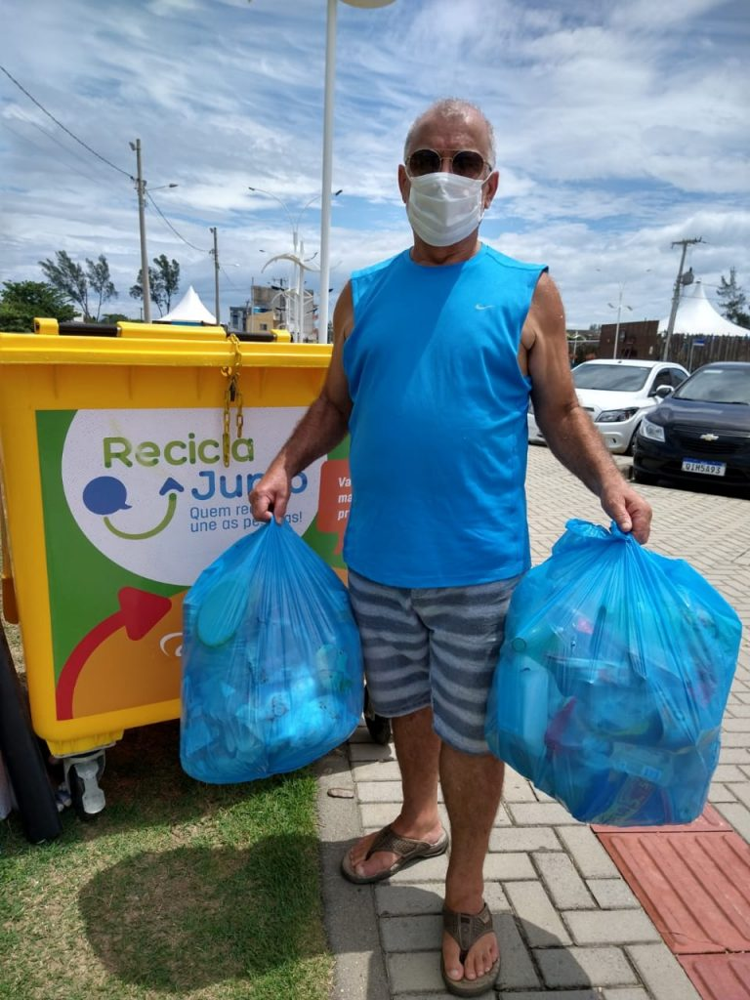
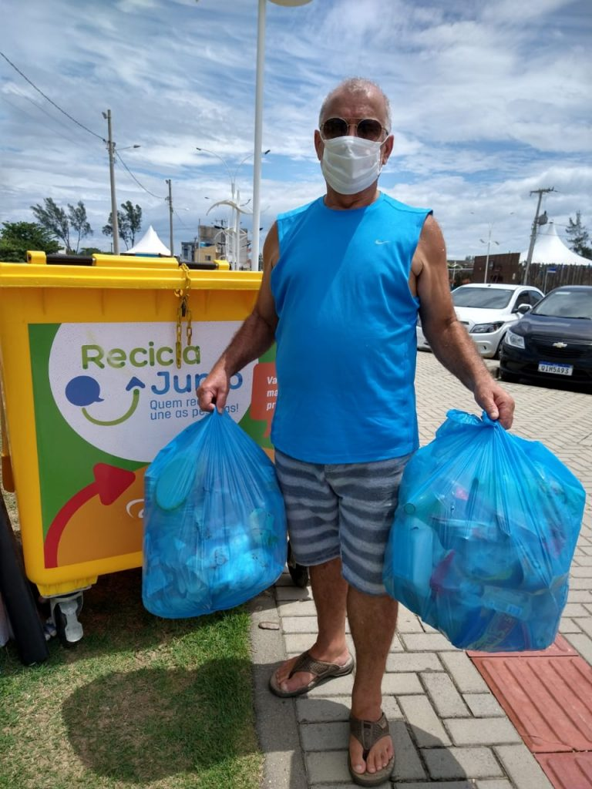

Preservando
Vidas

- INÍCIO
- EDUCAÇÃO AMBIENTAL
- POLUIÇÃO
- RECICLAGEM
- COMO AJUDAR?

A educação ambiental é um processo educativo que visa promover a consciência e a compreensão da interação entre as pessoas e o meio em que vivem. Não se trata apenas de transmitir informações, trata-se de estimular a reflexão, valores e atitudes que conduzam a um comportamento mais responsável e sustentável na utilização dos recursos naturais. Esta forma de educação é uma abordagem holística que integra aspectos sociais, culturais, económicos e ecológicos. Isto não se limita aos ambientes escolares, mas estende-se a todos os sectores da sociedade, incentivando a participação activa das comunidades na procura de soluções e práticas mais conscientes. A educação ambiental proporciona conhecimento sobre os problemas ambientais e suas causas para alcançar um ambiente mais equilibrado e um futuro mais sustentável para as gerações presentes e futuras.
Os objetivos da educação ambiental são amplos e visam promover uma compreensão mais profunda e consciente das interações entre os seres humanos e o meio ambiente. Os principais objetivos são:
A poluição impacta os ecossistemas aquáticos ao alterar a qualidade da água, prejudicar organismos e desequilibrar o ambiente. Substâncias químicas como metais pesados e pesticidas causam toxicidade, enquanto nutrientes em excesso levam à eutrofização, reduzindo o oxigênio disponível. Plásticos e microplásticos afetam a fauna por ingestão ou enredamento. O aquecimento da água devido à poluição térmica e o escoamento de resíduos urbanos e industriais introduzem toxinas e patógenos, prejudicando espécies sensíveis. A poluição por óleo contamina o ambiente e animais. Esses fatores causam perda de biodiversidade, alterações na cadeia alimentar e redução dos serviços ecossistêmicos.
A reciclagem é um processo essencial para a preservação do meio ambiente, pois transforma materiais descartados em novos produtos, reduzindo o desperdício e o consumo de recursos naturais. Esse processo ajuda a minimizar a quantidade de resíduos enviados a aterros sanitários e lixões, contribuindo para a redução da poluição do solo, da água e do ar.
Preservação de Recursos Naturais: Ao reutilizar materiais como papel, plástico, vidro e metais, diminuímos a extração de matérias-primas, como árvores, minérios e petróleo.
Redução de Emissões de Gases de Efeito Estufa: A reciclagem consome menos energia do que a produção de materiais do zero, ajudando a combater as mudanças climáticas.
Geração de Empregos: A cadeia da reciclagem cria oportunidades em coleta, triagem, processamento e fabricação de novos produtos.
Educação Ambiental: Incentiva a conscientização sobre a importância do consumo sustentável e da gestão responsável de resíduos.
 

Ajudar na reciclagem é simples e essencial para o meio ambiente. Separe os resíduos em recicláveis, orgânicos e não recicláveis, lave embalagens para evitar contaminação e descarte em pontos de coleta seletiva. Incentive a conscientização, ensinando familiares e amigos sobre a importância da reciclagem. Apoie projetos locais, doe materiais para cooperativas e prefira produtos reutilizáveis ou com embalagens recicláveis. No trabalho ou na comunidade, implemente estações de coleta seletiva e promova hábitos sustentáveis. Com pequenos passos, é possível reduzir o desperdício e preservar o planeta.
Clique aqui para fazer cadastro e encontrar uma ONG mais próxima de sua residência.